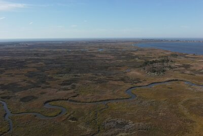

Upon relocating to the University of Virginia, the geomorphology modeling research evolved from a focused research instrument into a multi-purpose platform supporting PhD student investigations, speculative advanced studios, and foundational instruction in landscape architecture. A team of academics, including Brian Davis and Xun Liu, collaborated on developing platforms and interfaces for adaptive design protocols that could engage territorial-scale landscape systems.
The UVA installation utilized an EmRiver geomorphology table (approximately 4m × 1.5m working area, 0.3m depth) augmented with expanded sensing and actuation capabilities. The methods developed experimentally at REAL were codified, transforming experimental practice into teachable methodology that could be engaged by students and research collaborators across multiple levels of expertise.
Physical Environment: The model is similar but larger than the one used at REAL and creates fluvial landscapes through the interaction of water flow and synthetic sediment. Particulate matter moves under the force of water through processes that sort and organize particles based on velocity, weight, and size. As water moves across the surface, through channels, and as groundwater below, erosion and deposition organize the sediment to create landscapes of river beds, islands, deltas, beaches, dunes, ripples, and other landforms.
The synthetic sediment comprises particles of varying sizes and densities that sort according to flow velocity where larger/lighter particles concentrate where velocities are higher, smaller/denser particles deposit where flow slows. This sorting creates visible stratigraphic patterns, with fine-grained material often marking “ancient” deposits overlain by subsequent coarse-grained layers. The self-organizing behavior produces recognizable geomorphological features without requiring precise scaling to any particular prototype landscape.
Control Parameters:
Bed slope (lateral and longitudinal) via adjustable supports
Water level through downstream weir height
Stream flow via variable-speed pump with programmable hydrographs
Groundwater flow via secondary pump system
Sediment input through calibrated media feeders
Flow visualization through dye injection system
The programmable hydrographs enable repeatable experimental conditions and the same flow regime can be run multiple times with measured variations in other parameters, supporting systematic investigation of cause and effect relationships while acknowledging the inherent variability of complex systems.
Sensing Systems, the multi-modal sensing infrastructure captures model behavior at multiple resolutions and temporalities:
Microsoft Kinect and Kinect 2mounted overhead captures continuous point clouds of surface topography, with viewing angle of approximately 60 degrees and point resolution of roughly 10mm at the surface
Ultrasonic banner sensors on stepper-motor-driven rails (controlled via Arduino) measure precise spot elevations and generate section cuts, offering higher accuracy than depth cameras and controllable through predefined gridded sampling patterns
Image analysis tracks sediment sorting, channel migration, and morphological change through systematic photographic documentation
Dye visualization reveals flow paths, velocity gradients, and turbulence patterns
The overlay of sensing modalities produces a continuously updated digital representation of the physical model,not a prediction of external landscapes but a record of the model’s own dynamic behavior available for analysis and feedback control.
Responsive Prototypes: The lab serves as a testing ground for actuated design elements operating across a gradient of engagement modes. Direct interaction involves physical manipulation of the model environment,placing obstacles, adjusting slopes, introducing sediment. Responsivity involves sensing-driven devices that react to detected conditions. Autonomy involves systems that learn or evolve behaviors through feedback and devices whose response patterns develop through machine learning rather than pre-programmed rules.
The UVA phase consolidated experimental methods into pedagogy, enabling subsequent generations of students and researchers to engage the geomorphology table as a design tool. Beyond technical operation, this step required articulating theoretical frameworks and situating the work within broader disciplinary and scientific contexts.
Composite Modeling as Design Method: The UVA lab operates within an emerging practice of composite modeling that creates simultaneous interaction between numerical and physical models.
From Responsivity to Autonomy: The UVA phase advanced integration of machine learning into the responsive framework. A useful analogy distinguishes pre-programmed responsivity from learned adaptation in that early thermostats operated through fixed thresholds (when temperature drops below X, activate heating) and contemporary systems like Nest develop patterns of automation through machine learning, optimizing across multiple variables (user schedule, energy pricing, thermal dynamics of the space). The device develops behaviors unique to the learning algorithm it uses and the context in which it functions.
The geomorphology lab became a testing ground for this transition applied to landscape infrastructure. How might sediment gates develop response patterns through learned optimization rather than pre-programmed rules? How might infrastructure that “continually learns from itself by processing the results of its actions before choosing the next intervention” differ from infrastructure operating through fixed protocols? The gradient from interaction through responsivity to autonomy maps a trajectory of increasing machine agency in landscape systems,a trajectory the lab enables investigating at experimental scale before territorial deployment.
Notation for Indeterminacy: The iterative documentation produced through image analysis and sensing generates new forms of landscape notation. Traditional topographic plans represent terrain as it exists at a moment of survey creating a snapshot extracted from continuous process. The research produces topographic representations that speak to movement and probabilities of change, expressing flux as condition rather than capturing stasis as fact. Areas of stability and areas of active change appear as gradients rather than boundaries; the notation system provides graphic language for landscapes understood as dynamic systems rather than fixed forms.
Collapsing Design Phases: The research collapses representation, analysis, documentation, and construction into continuous feedback. Sensing systems that document the model’s behavior simultaneously provide data driving responsive interventions. The distinction between observing landscape and acting upon it dissolves into unified cycles of perception and response. This collapse prefigures the “learn-and-adjust” approach that characterizes adaptive management,design as ongoing negotiation with dynamic systems rather than one-time specification of fixed outcomes.
The work advances a form of design research holding great promise for engaging large-scale environmental change. Engaging highly dynamic systems and utilizing their energy to compose new terrains provides mechanisms for massive change with minimal input. The feedback between sensing systems, machine intelligence, and landscape modification creates construction methodologies that are tunable, challenging current methods of complex simulation and static infrastructure. The goal is to move beyond known representations and design methods, developing tools necessary to address global conditions characterized by flux and indeterminacy.
